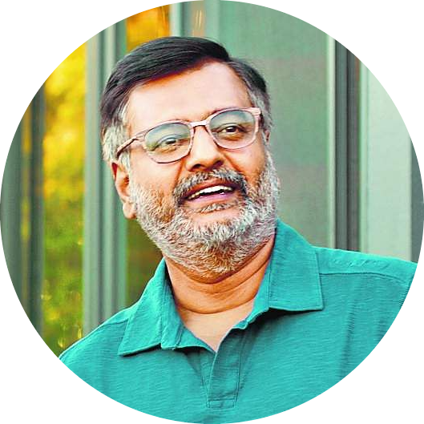

|  | VivekActor | Comedian | Social Activist1961-2021Vivekanandan, known professionally as Vivek, was an Indian actor, comedian, television personality, playback singer and social activist working in the Tamil film industry. |
In comparison to other comedians in Tamil cinema, Vivek is more of a satirist than a slapstick comedian, who are usually popular in the Tamil film industry. Most of his humour makes people think about the problem and its solution. His roles usually draw humour from scenes of daily life in Tamil Nadu (especially Chennai) and the surrounding regions. Some of his most popular jokes involve serious subjects such as bribery, over-population, and political corruption. Nevertheless, he has appeared in lighter parodies too.
Vivek debuted with Manathil Uruthi Vendum in 1987. He was usually a comedian in small roles till the late 1990s. He eventually had larger roles and a separate comedy track for comic relief, even in more serious movies. During his peak, he was an important part of movies like Kushi, Minnale, Run and Saamy. During this time, Vivek got multiple Filmfare awards and other awards. In the mid of year 2000, his popularity declined as he only acted in a small fraction of movies compared to his professional rival, Vadivelu. However, with the 2007 blockbuster Sivaji: The Boss, Vivek got more offers. He won positive reviews from critics for his performance, and also won the award from the state for Best Comedian. Moreover, the lack of big-budget films signed by the actor and the emergence of Santhanam, saw Vivek reach a nadir in 2012, where he only had a single release. His acclaimed work during the period involved a portrayal of a don in Padikathavan, an appearance in drag in Guru En Aalu and as a police officer in the Singam series. Re-emerging after a sabbatical, Vivek announced his plans to move away from his usual comedy roles after being advised by director Bala and Kamal Haasan and signed a film titled Naan Than Bala, in which he played a serious role, he received positive reviews from critics for his performance.
As a television personality, Vivek has hosted a number of events and has interviewed media personalities, notably A. P. J. Abdul Kalam, A. R. Rahman, and Rajinikanth.
Vivek, born in Madurai, is married to Arulselvi, with whom he has Amritha Nandini Vivek, Tejaswini Vivek, Prasanna Kumar Vivek.Vivek launched Green Kalam, under the guidance of former President of India A. P. J. Abdul Kalam. He sponsored the planting of more than 2.45 million trees in a span of less than three months in the first phase. "Green Kalam Project” was a Campaign against global warming, which had attained its mission of planting billion trees for billion people all over the state.
Vivek passed away on April 17, 2021 at a SIMS Hospital in Chennai, following a massive heart attack. He was 59.
Inspired by Kalam's environmentalism, Vivek founded the Green Kalam initiative in 2010 with the mission of planting one billion trees across Tamil Nadu.
| Event | Year | Category/Award |
|---|---|---|
| Sathyabama University | 2015 | Honorary Doctorate |
| Civilian honor | 2009 | Padma Shri for his contributions to Indian Cinema |
| Tamil Nadu State Film Honorary Award | 2006 | Kalaivanar Award for his contributions to Tamil Cinema |
| Filmfare Awards South | 2002 2003 2004 |
Best Comedian – Tamil |
In addition to these, he has won many more awards and honours.
Vivek was one of the greatest comedian that Tamil cinema has witnessed.